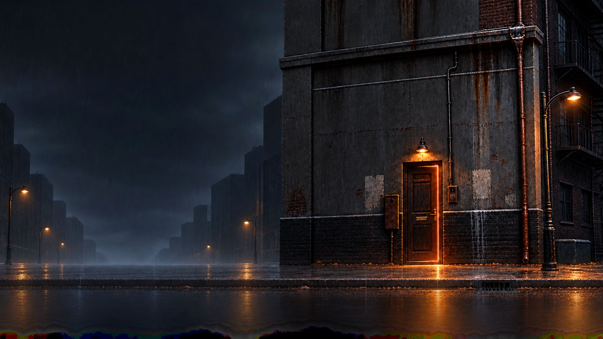
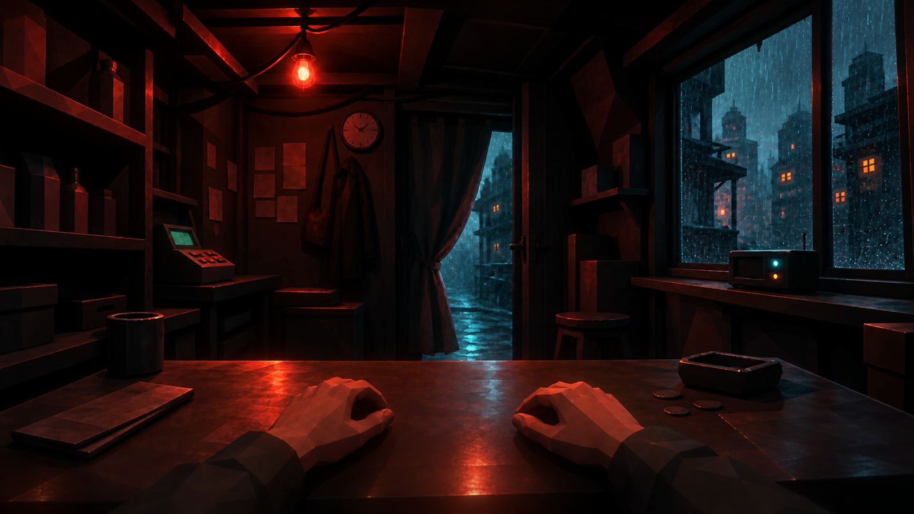
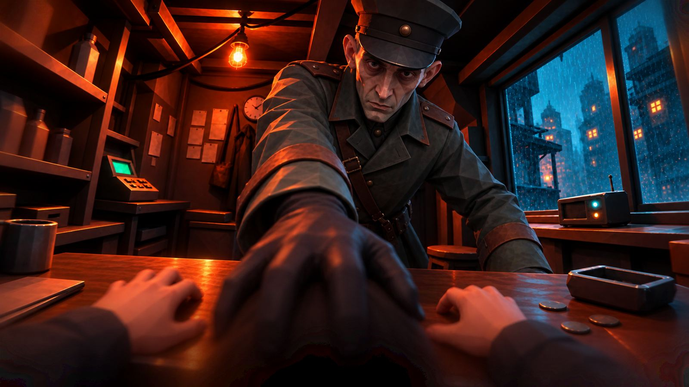
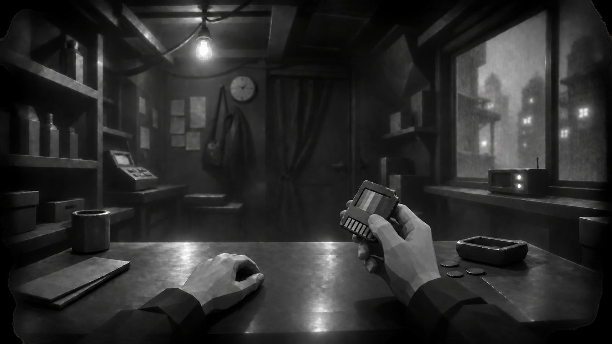
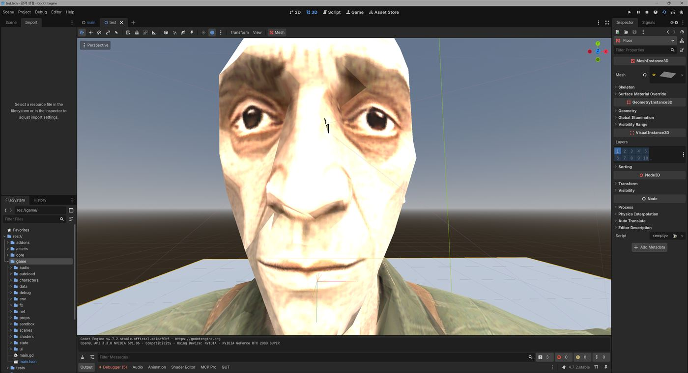

NAN 2026 본선 · Twenty-Three
23
스물셋을 다 채우고 나서야 무엇을 잃었는지 깨닫는 게임. 돈 대신 감각이 오가는 2026년, 남의 눈과 귀를 사고팔며 내 몸의 빈칸을 채워 가는 상점 주인의 이야기.
01 · Theme
제시어 세 개, 하나의 컨셉
한 단어가 나머지 둘의 이유가 되도록 묶은 결과가 “감각이 화폐가 된 2026년”. 세 단어를 한 군데씩 따로 박아 넣으면 티가 나기 때문에 택한 방식.
주제는 행사 시작과 동시에 공개. 전 팀 공통 2026년, 추첨 소재 감각, 열 개 중 선택한 기능 키워드 수집.
- 2026년은 세상이 망가진 원인. 코인, 조각투자, 뇌-컴퓨터 인터페이스처럼 지금 뉴스에 나오는 말을 그대로 차용.
- 감각은 돈이자 내 몸. 1인칭 게임이라 화면 그 자체이기도 함.
- 수집은 함정. 23개를 모으라고 해 놓고, 23개를 다 가지면 불법.
“돈이 죽고 자산도 쓸모없어진 2026년. 찍어낼 수 없는 게 딱 하나 남았다. 감각이다.”
02 · World
왜 하필 감각이 돈인가
세계관의 역할은 “이 규칙은 왜 이래?”에 대한 답. 이유가 없으면 규칙은 그냥 “원래 그런 것”이 되기 때문. “감각을 사고판다”는 설정만으로는 부족해서 세상이 이렇게 된 과정을 네 단계로 설계.
- 자산 광풍이 죽인 돈
모두가 돈을 코인, 주식, 부동산, 조각투자로 바꾼 시대. 정부는 거품을 받치려 돈을 찍었고, 돈은 종이로 전락.
- 돈 노릇을 못 한 자산
아파트로는 라면 구매 불가. 금은 깨물어 봐야 진위 확인, 수천 조각으로 쪼개진 소유권은 주인조차 모호. 부자들은 자산을 끌어안은 채 굶주림.
- 조건이 맞은 유일한 것, 감각
의료용 감각 이식 칩이 풀리면서 감각을 뽑아 옮기는 일이 가능해짐. 돈이 갖춰야 할 조건을 전부 갖춘 대상.
- 가난한 사람부터 시작된 판매
감각은 부자든 가난뱅이든 똑같이 23개. 가진 게 그것뿐이면 그게 전 재산. 세금조차 감각으로 걷는 도시. 감각본위제 원년, 2026.
| 화폐의 조건 | 자산 | 감각 (칩 이후) | → 게임 규칙 |
|---|---|---|---|
| 분할 | ✗ | 색 하나, 귀 하나 단위 | 23개 개별 아이템 |
| 검증 | ✗ | 느껴 보면 앎 | 감정 미니게임. 직접 느껴 보고 값 매기기 |
| 균질성 | ✗ | 누구 빨강이든 빨강은 빨강 | 종류별 단일 시세표 |
| 희소성 | ✗ | 한 사람당 23개, 추가 생산 불가 | 23칸 채우기 |
| 소모성 | ✗ | 늙으면 닳음 | 잔여율. 닳기 때문에 계속되는 수요 |
핵심은 표의 오른쪽 끝 열. 감정 미니게임, 23칸, 잔여율처럼 플레이어가 “이건 왜 이래?” 하고 물을 법한 규칙마다 세계관 쪽 답을 미리 준비.
제목이 23인 이유
- 시각 9 (색 7 + 흑·백)
- 청각 2 (좌·우)
- 촉각 4 (손·발·얼굴·등)
- 후각 3 (유기물·개체·잔여물)
- 미각 5
이 세계에서 사람의 감각은 스물셋. 돈을 세는 단위, 몸의 칸 수, 게임의 목표가 전부 23. 주인공의 시작은 그중 11개.
03 · Pillars
디자인 필러
기능 추가 여부가 애매할 때마다 기준으로 삼은 세 문장.
파는 것이 곧 느끼는 것
무엇을 팔지는 돈 문제가 아니라 남은 시간 동안 이 게임을 어떤 눈으로 볼지의 선택. 빨강을 팔면 숫자가 아니라 화면에서 빨강이 빠지는 구조.
손님은 숫자가 아니라 사람이다
속인 손님은 며칠 뒤 다시 찾아옴. 손님마다 이름과 사연이 있고, 말로 설득도 속임도 가능.
다 모으는 게 제일 큰 손해
23칸을 채우라고 해 놓고, 다 채우면 불법. 그 순간 누가 문을 열고 들어올지는 그동안의 장사 방식이 결정.
04 · Core Loop
하루 = 낮 · 정산 · 밤 · 이벤트

파는 손님이 오면
사실대로 말할지, 낮춰 부를지가 핵심 선택. 감정 후 결과를 보고 결정, 이어서 흥정. 산 감각은 창고에 보관하거나 바로 내 몸에 장착. 장착 후 되팔려면 재수술비 발생.
사는 손님이 오면
원하는 조건을 듣고 창고에서 하나를 꺼내 제시. 재고가 없으면 계약금을 받고 다음 날까지 조달 약속.
밤, 뒷문
낮보다 몇 배 남는 불법 기억 거래. 대신 거래마다 25% 확률로 발각. 후각이 하나도 없으면 문조차 열리지 않음.
05 · Pillar 1
감각을 팔면 바뀌는 화면
예외 없는 탈색이 곧 연출. 물체마다 셰이더를 붙이는 대신, 다 그려진 화면 위에 한 번 더 덧칠하는 방식을 선택. 소품이 새로 들어와도 빨강이 새어 나오는 구멍이 생기지 않는 구조.
아래에서 직접 판매 체험 가능.

웹용 근사 버전. 실제 게임은 색 채널마다 채도만 제거하고 밝기는 유지. 색은 3개 미만으로 판매 불가.
| 판 것 | 화면 변화 |
|---|---|
| 빨강 | 빨간 것 전부 회색으로. 손님 옷도, 진열장 불빛도 |
| 흑 | 그림자 소멸로 납작해진 세상 |
| 백 | 밝은 곳이 눌려 뿌연 화면. 흑까지 없으면 계속 흔들리는 초점 |
| 청각 한쪽 | 그쪽 소리 차단. 양쪽 모두 팔면 손님 말이 자막째로 깨짐 |
| 후각 | 화면에 안개. 밤 뒷문도 잠김 |
| 촉각 | 화면 변화 없음. 대신 감정할 때 손이 떨려 무늬 따라 그리기 실패 |
색 3개에 흑·백 중 하나만 남아도 손님 윤곽과 UI는 식별 가능해야 한다는 기준. 그 아래로는 판매 자체를 차단. 안 보여서 못 하는 건 연출이 아니라 버그.
그리는 순서에도 의도를 반영. 돈과 날짜가 뜨는 HUD는 덧칠 위에 그려 항상 선명, 손님 대사 자막은 덧칠 아래에 그려 함께 탈색. 계기판은 내 눈으로 보는 게 아니지만, 손님 말은 내 눈으로 읽는 것이기 때문.
06 · Appraisal & Deception
손재주가 정하는 건 정보의 정확도뿐
감각의 가치를 알아내는 건 상인의 몫. 손님은 자기 감각이 얼마짜리인지 모르는 설정. 감각 종류마다 서로 다른 능력을 재는 미니게임 존재.
| 감각 | 도구 | 재는 능력 |
|---|---|---|
| 시각 | 팔각 팔레트 | 보여 준 색을 정확히 집어내기 |
| 청각 | 다이얼 | 방금 들은 음 높이에 다이얼 맞추기 |
| 후각 | 연기 잔 야바위 | 연기 오른 잔이 섞인 뒤에도 눈으로 추적 |
| 미각 | 지나가는 맛 | 자리마다 맛의 강약 기억 |
| 촉각 | 무늬 따라 그리기 | 손 떨림 없이 흰 띠 한가운데 따라가기 |
못 맞혀도 거래는 진행
점수가 낮으면 등급이 “3~4등급”처럼 넓게 표시될 뿐. 손재주로 거래 성패가 갈리면 도덕 선택이 아닌 손 연습 게임으로 변질.
거짓말하지 않는 감정 화면
넓게 보여 줘도 진짜 등급은 반드시 그 범위 안. 화면을 못 믿으면 속일지 고민할 때 양심보다 UI부터 의심하게 되는 문제.
그리고 선택
속임은 언제나 진짜보다 낮게 부르는 것. 멀쩡한 물건을 고물이라 해서 싸게 사는 방식. 한 단계 낮출지 두 단계 낮출지에 따라 남는 돈도 들킬 확률도 차이. 맨 아래 등급은 더 낮출 데가 없어 속임 버튼 자체가 없음.
어느 쪽을 골라도 게임의 훈계는 없음. 며칠 뒤 그 손님이 다시 올 뿐.
07 · LLM Agent
경제는 게임이, 말은 서버가
손님을 LLM으로 만든 이유는 필러 2. 미리 써 둔 선택지를 누르는 거짓말에는 죄책감이 없음. 그건 게임이 한 말. 내 손으로 변명을 쳐 넣어야 비로소 내 거짓말.
다만 가격까지 LLM에 맡기면 같은 상황에서도 매번 다른 값이 나와 밸런스 측정 불가. 그래서 역할 분담 경계 설정.
| 게임(규칙)이 결정 | LLM이 결정 |
|---|---|
| 가격, 예산, 손님이 입 밖에 안 내는 마지노선 | 할 말 (두 문장 이내) |
| 거짓말 발각 여부 (주사위) | 수락, 역제안, 퇴장. 게임이 정한 범위 안에서만 |
| 등장 손님 (시드 고정) | 기분, 호감 변화량 |
| 평판, 세금, 재고 | 이름, 직업, 사연 |
발각은 주사위가, 분노는 LLM이
들킬지는 게임이 주사위로 먼저 결정, LLM은 결과를 받은 뒤에만 반응.
LLM이 알아서 눈치채게 두면 똑같은 거짓말이 어제는 통하고 오늘은 안 통하는 상황 발생, 플레이어에게 이유 설명 불가. 발각이 이미 정해져 있으면 LLM은 얼마나 화낼지, 지난 거래 중 무엇을 들먹일지만 고민하면 되는 구조. 판단과 연기를 한꺼번에 맡기면 둘 다 어중간.
의심도는 성격(신중, 충동, 의심, 절박)에 따라 0.2~0.8. 밤 손님은 +0.2.
이중 필터
LLM 답은 서버에서 한 번, 게임에서 같은 기준으로 한 번 더 검사. 대사 속 마지노선 숫자는 삭제, 범위를 벗어난 값은 잘라 냄.
서버가 죽어도 같은 손님
플레이어는 전환을 눈치챌 수 없음. LLM 응답 실패 시 게임이 같은 흥정 규칙으로 이어받고, 양쪽 모두 흥정 사례 23개를 똑같이 통과해야 하기 때문.
기억하는 손님
속이면 호감 −40, 제값을 쳐주면 +15. 며칠 뒤 돌아온 손님의 첫마디는 “지난번 그 눈, 얼마에 팔렸는지 알아요.”
08 · Economy
값은 공식으로, 평판은 보이지 않게
| 종류 | 배율 | 개수 | 좋은 특성 / 하자 |
|---|---|---|---|
| 시각 | ×3.0 | 9 | 야간 시력, 동체 시력 / 색약, 터널 시야 |
| 후각 | ×2.5 | 3 | 잔여물 탐지, 위험 조기 감지 / 후각 둔화 |
| 청각 | ×2.0 | 2 | 방향 감지, 절대음감 / 이명 |
| 촉각 | ×1.5 | 4 | 미세 촉각, 온도 감지 / 굳은살, 저림 |
| 미각 | ×1.0 | 5 | 독 감지 / 미각 둔화 |
평판이 좋을수록 정보의 질도 상승. 벽보의 소식은 매일 세 개, 시세에 영향을 주는 건 그중 하나뿐. 손님이 흘리는 소문은 절반이 거짓이지만, 나를 믿는 손님일수록 덜 속임.
보여 주지 않는 평판
숫자를 보여 주면 플레이어는 손님 얼굴 대신 게이지를 보게 된다는 판단. 평판 범위는 −100 ~ +100이지만 화면에 숫자도 게이지도 없음. 손님 말투, 재방문, 징수관 방문으로만 체감.
한 번의 타협으로 끝나 버리면 그건 선택이 아니라는 판단. 같은 시드로 7일을 시뮬레이션한 결과, 한 번도 속이지 않고 완주하면 평판 약 +70. 엔딩 문턱은 +40.
속임 한 번에 −10이면 그 여유가 거의 다 소진. “웬만하면 정직하게, 가끔 한 번 속이는” 플레이 스타일이 설 자리가 사라지는 수치.
09 · Ending
칸만 채워서는 끝나지 않는 게임
23칸 합계 70점 이상이어야 “다 모았다”로 인정. 감각 하나의 점수는 등급과 잔여율로 산정, 1등급에 닳은 데가 없으면 5점. 제일 싼 5등급으로 칸만 메우면 23점, 평균 3등급이어도 69점으로 한 끗 부족.
필러 3의 “다 모으는 게 손해”가 성립하려면 모으는 데 치러야 할 값이 필요. 그 값이 70.
엔딩 시점은 마지막 감각을 몸에 붙이는 바로 그 순간. 초기 계획의 7일 종료 엔딩은 삭제. 날짜가 다 돼서 끝나면 모으다 잃는 이야기가 시간 초과로 흐지부지되기 때문.

전량 징수
징수국의 급습. 화면 색이 하나씩 꺼지고 소리도 잦아듦. 그리고 열리는 문, 새 손님의 한마디. “여기… 감각 사준다면서요.” 게임 첫 장면과 같은 대사.
단골의 구원
반복을 끊고 빠져나가는 유일한 결말. 징수관 앞을 막아선 단골이 자기 감각을 반씩 나눠 주고, 그 감각으로 이런 일이 전에도 있었다는 사실을 깨달음.
크레딧에는 내 눈과 귀가 누구에게서 왔는지가 차례로 등장. 속였던 손님의 이름도, 그 사람의 눈이 결국 얼마에 팔렸는지도 함께.
10 · Asset Pipeline
48시간 안에 가게 하나 채우기
에셋 담당. 해법은 생성형 AI 파이프라인과, 코드 작업을 멈추지 않는 분리 구조. 상점, 손님, 소리, 컷씬을 두 명이 이틀 안에 채워야 하는 분량이라 생성형 AI 없이는 불가능. 에셋 교체 중에도 코드 쪽 작업이 멈추면 안 되는 조건.
- Claude Code에 분위기 설명
- 이미지 프롬프트 생성
- GPT Image 2로 장면 컨셉 아트
- 소품별 분리
- Meshy AI로 모델·텍스처
- Mixamo로 리깅, 애니메이션 선별
- Claude Code에 분위기 설명
- Suno용 프롬프트 생성
- Suno AI로 제작
- 부족분은 GDC 2026 무료 사운드로 보충
- 장면 설명
- GPT Image 2로 반복 생성
- JSON 타이밍표로 연출
- Claude Code로 자막과 함께 게임에 이식
그림 여덟 장으로 만든 인트로
연출 수정은 표의 숫자만, 코드는 그대로. 컷별 노출 시간, 카메라 방향, 암전 위치, 깔리는 소리를 전부 intro_cutscene.json 표 하나에 기록.
일부 연출 규칙은 테스트 코드가 검사. 소리가 크게 밀려오는 구간은 한 번, 카메라 같은 방향 연속 이동 금지, 겹쳐 넘기기는 7→8번 사이 한 번.
래퍼 씬, 충돌을 막는 약속
회색 상자를 진짜 모델로 바꿔도 게임 씬은 한 줄도 바뀌지 않는 구조. 게임 씬은 에셋 파일을 직접 불러오지 않고, 중간의 껍데기 씬(래퍼)만 참조. 껍데기의 크기, 기준점, 연결 지점 이름만 약속으로 고정하고 내부는 자유롭게 교체.
크기가 약속 치수에서 20% 넘게 벗어나면 CI가 차단. 폴더 단위로 담당 영역을 나눈 덕분에 이틀 내내 로직과 에셋 작업을 병렬로 진행.

11 · 48 Hours
NAN 2026 본선 — 48시간
- 09.04 (금) 16:00 · T+0
주제 공개
2026년, 추첨 소재는 감각. 기능 키워드는 열 개 중 선택.
- 09.04 (금) 24:00 · T+8h
컨셉 제출, 키워드 “수집”
자정까지 세계관 네 단계, 필러 세 개, 손그림 코어 루프, 제작 씬 목록(필수 26개) 확정.
- 09.05 (토) 10:00 · T+18h
심사위원 중간 점검
첫날 목표는 낮 한 바퀴 구동. 가게, 손님, 대화, 흥정, 장착, 화면 탈색까지. 씬마다 필수·있으면 좋음·제외를 붙여 순서대로 조립.
- 09.06 (일) 08:00 · T+40h
최종 제출
빌드, 게임 설명서, 기술 설명서. 테스트는 게임 526개, 서버 175개.
- 09.06 (일) 09:00
발표 10분, 시연 5분, 질의응답 5분
시연에 일부러 서버를 끊는 장면 포함. 서버 없이도 같은 손님이 같은 규칙으로 흥정하는 모습을 보여 주기 위한 준비, 행사장 와이파이가 끊길 가능성까지 고려.
뺀 것과 남긴 것
| 처음 계획 | 결정 | 이유 |
|---|---|---|
| 7일 지나면 끝나는 엔딩 | 삭제 | 날짜로 끝나면 “모을수록 잃는다”가 흐려짐 |
| 상점 확장, 경매 | 삭제 | 상인 특성(재고 +2, 밤 손님 +1)으로 대체 |
| 감정 미니게임 1~2종 | 5종 전부 제작 | “느껴 보면 안다”가 세계관의 뼈대라 축소 불가 |
| 이어하기 | 없음 | 한 판 15~25분, 앉은 자리에서 끝내는 설계 |
발표자료
PDF · 10쪽 · 16:9 · 9.1MB 23 — NAN 2026 본선 발표자료 타이틀 → 출발점 → 세계관 → 코어 루프 → 필러 1·2 → 기술 스택 → 경계선 → 에셋 → 접근성 발표자료 열기 ↗12 · Retrospective
회고
잘 된 것
- 세계관을 규칙의 이유로 활용. “돈의 조건” 표 하나로 감정 미니게임, 23칸, 잔여율의 존재 이유를 모두 설명. 규칙마다 핑계를 따로 지어낼 필요가 없었음.
- LLM에 맡기지 않을 것부터 결정. 가격과 판정을 게임이 쥐고 있어 시뮬레이션 가능. 평판 −6도 감이 아닌 근거로 정한 숫자.
다시 한다면
- 웹 빌드부터 제작. Windows·macOS 빌드만 제출해 설치 없이 바로 건넬 방법이 없었던 점이 아쉬움. 현재 웹 버전으로 이전 중.